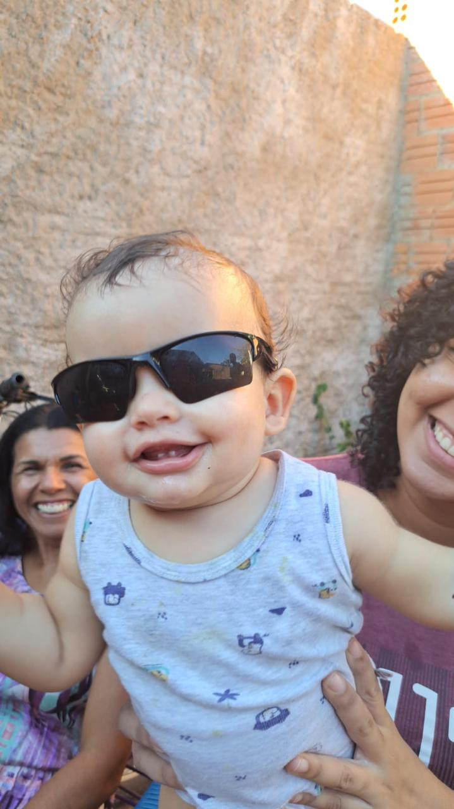
Théo na casa do bisavô
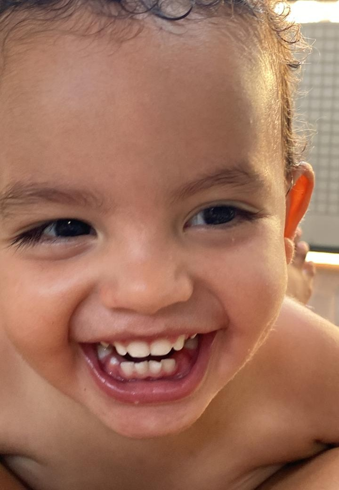
Sorriso do Théo
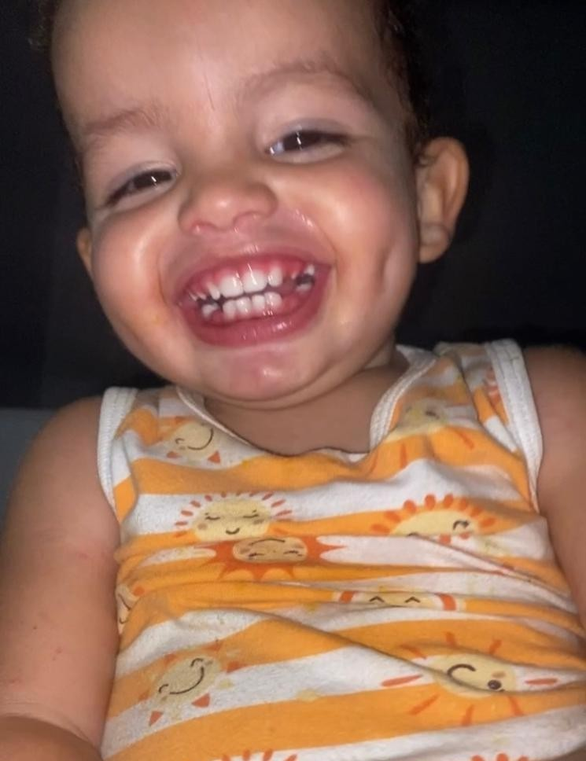
Théo feliz
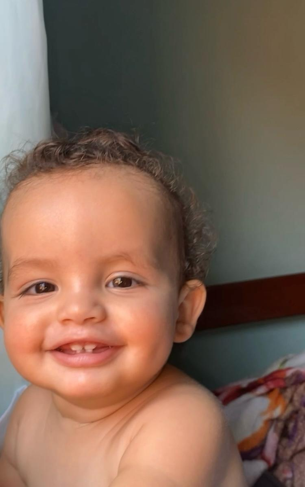
Sorriso encantador do Théo
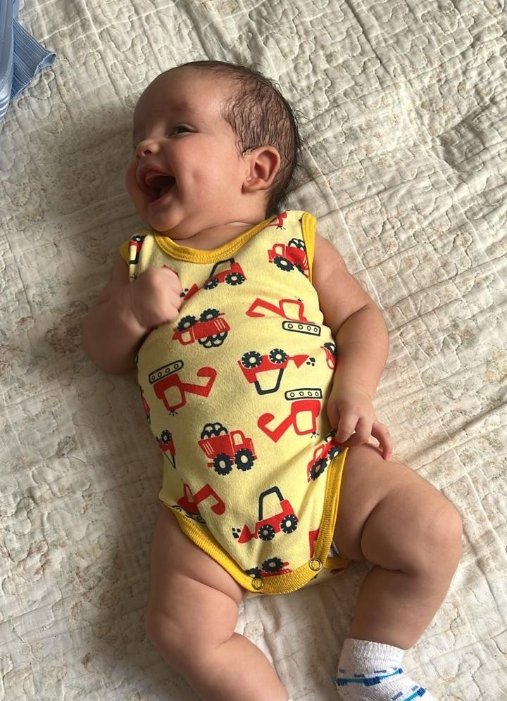
Momento especial com o Théo
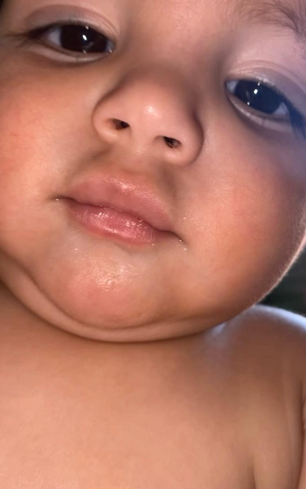
Théo brincando
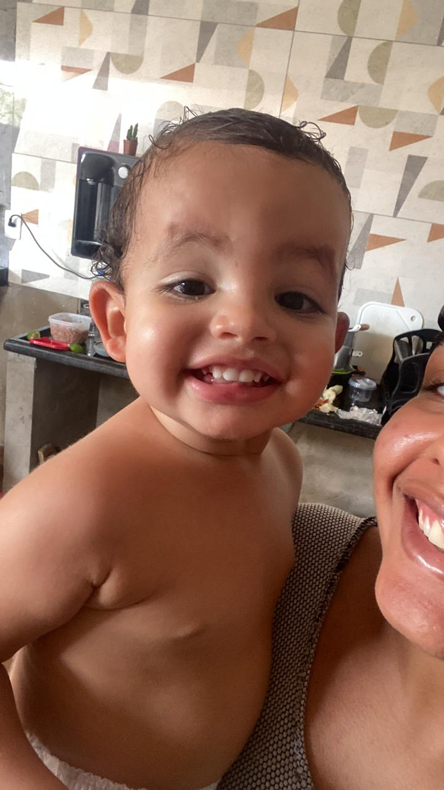
Lembrança querida do Théo
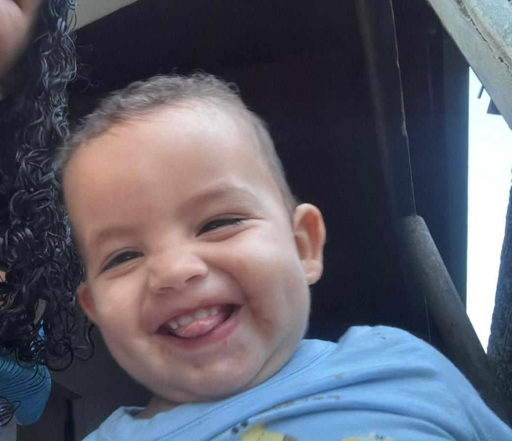
Recordação do Théo
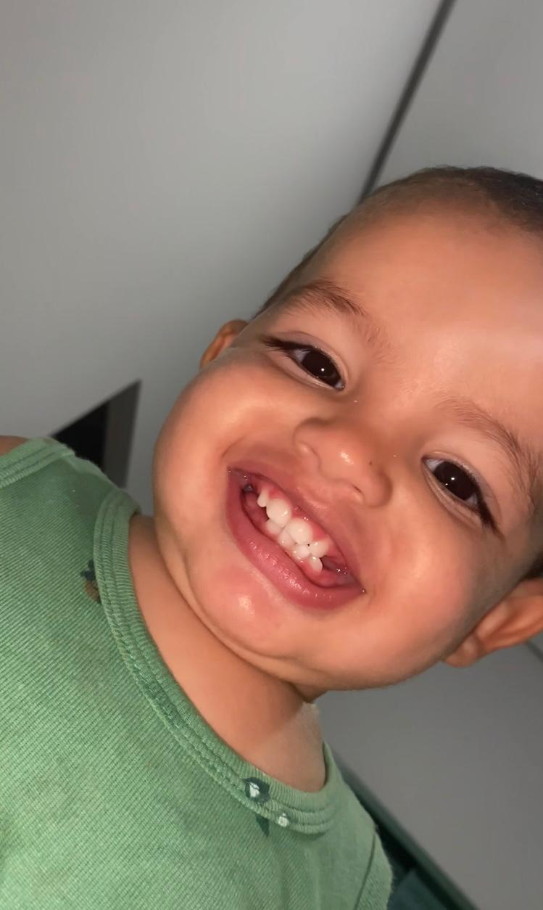
Théo bebê
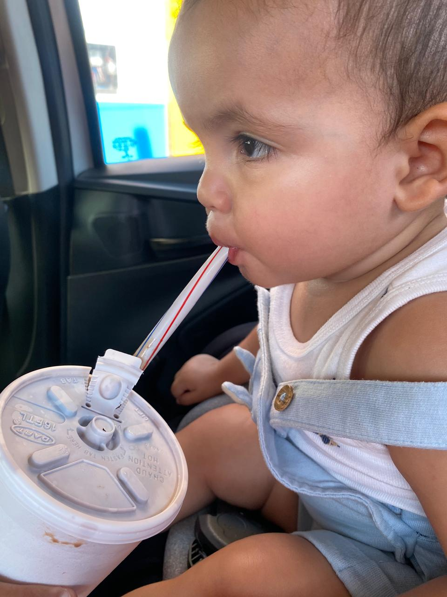
Théo pequeno
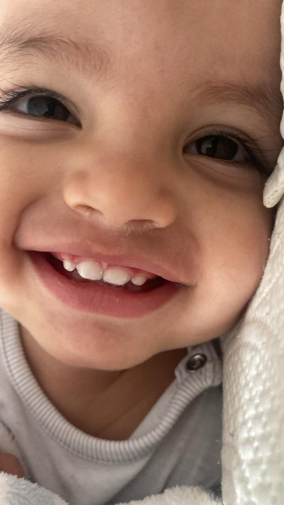
Sorriso iluminado do ThéoVídeo especial do Théo